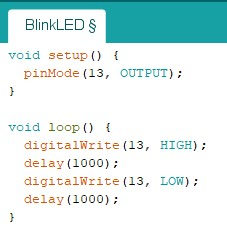
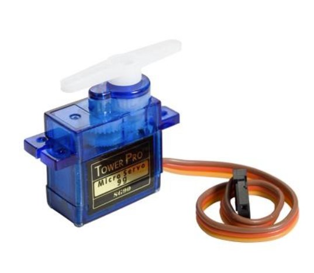

Introduction
Embedded programming is the writing of code to control machines and devices through embdedded systems. Embedded systems are computer systems that have a dedicated function within a larger electronic or mechanical system to perform a specifc task. One of these emdedded system devices are Arduino boards. In this webpage, I will go through arduino hardware, programming and some basic input and output (I/O) devices.
Arduino Hardware
Arduino systems is a hardware and software company that sells programmable circuit boards and software. The software and hardware are open source and are used to build electronics projects. In this module, we would primarily be using the Arduino Uno board. The Arduino Uno is the most common micro controller to use for projects and it possesses an Atmel Atmega328P processor along with sockets for interfacing and power. You can see further specifications and images below.
Arduino Programming
Using the Arduino IDE software, you can write your code, compile it, upload it to your board, and see your project come top life. But first, you need to connect your Arduino Uno board to your computer and setup the IDE. Make sure you are using the correct board and check the port the board is connected to.

When writing your program, Arduino would prompt you to do it in the setup and loop functions. Code in the setup function is only executed once after each powerup
or reset of the Arduino Uno whilst the code in the loop function is executed infinetly in a loop.

Arduino has an extensive lanaguage reference list but for now, we will just go through some basic Arduino functions to program dsome I/O devices.
- digitalRead(): Reads the value from a specified digital pin, either HIGH or LOW.
- digitalWrite(): Write a HIGH or a LOW value to a digital pin.
- pinMode(): Configures the specified pin to behave either as an input or an output.
- delay(): Pauses the program for the amount of time (in milliseconds) specified as parameter. (1000 ms = 1s)
Here are some practical applications of the functions in tinkercard, a webapp that can be used to simulate circuits designs.
- Blinking LED
- Blinking LED With Switch


Basic I/O Devices
Here are some basic I/O devices that are used in this module, their functions and what they look like.
| Input Devices | ||
|---|---|---|
| Device | Function | Image |
| Push Button | Simple switch mechanism used to control an aspect of a machine or devices such as on/ off. |  |
| Temperature Sensor | Measures the hotness or coldness of an enviornment through the measurement of voltage across a diode. |  |
| Photoresistor (LDR) | Detects the change in light levels by measuring change in resistance. Low resistance means high light levels and vice versa. |  |
| Ultrasonic Distance Sensor | Senses the distance of objects by sending pulses of ultrasonic sound waves which travels through the air and bounces back upon hitting an object. |
| Output Devices | ||
|---|---|---|
| Device | Function | Image |
| LED | Light emmiting diodes that is widely used as indicator lights. |  |
| RGB LED | Special LEDs that uses the color red, blue and green to produce many different hues of light. |  |
| DC Motor | A type of rotary electricl motor that is known for its high speeds at thousands of rpm. | |
| Servo Motor | A type of motor that allows for the precise control of angular or linear position, velocity and acceleration. |  |